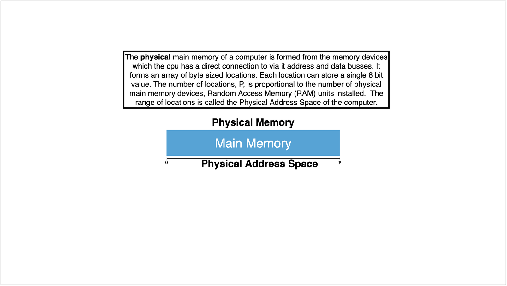
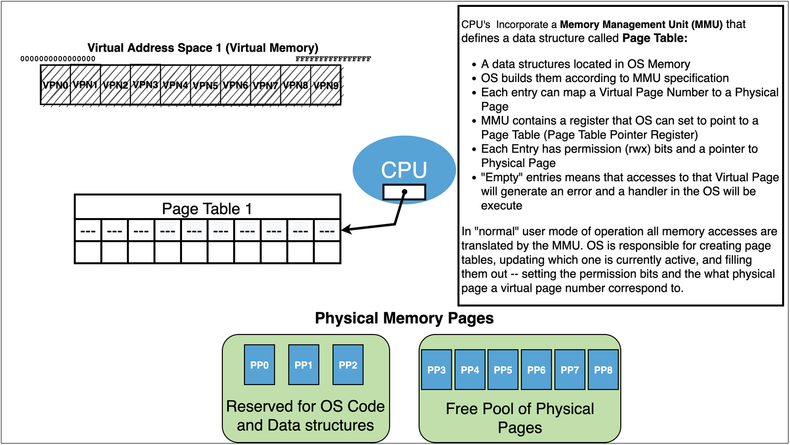
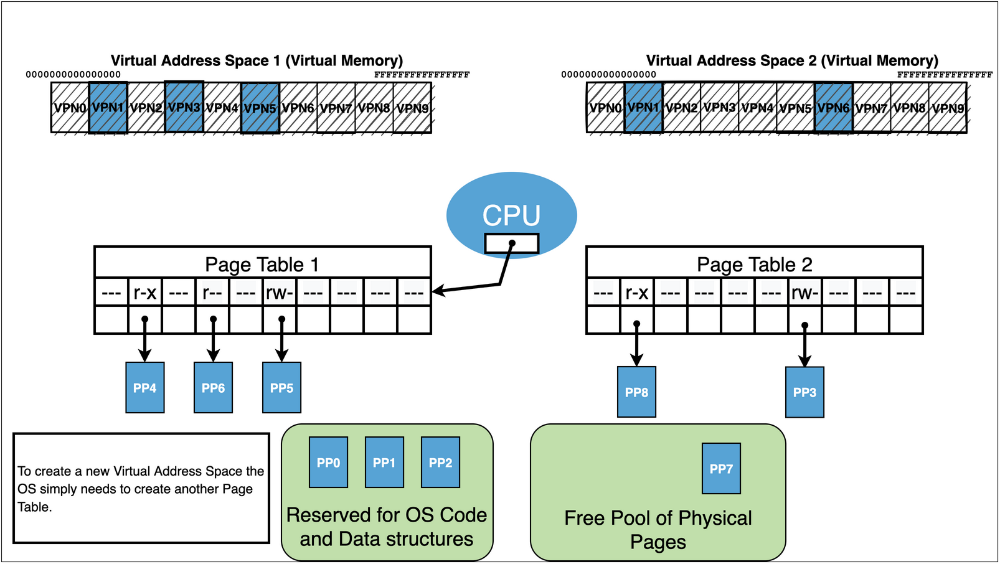
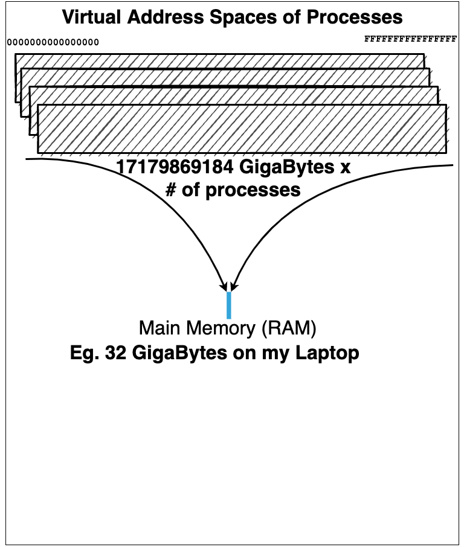
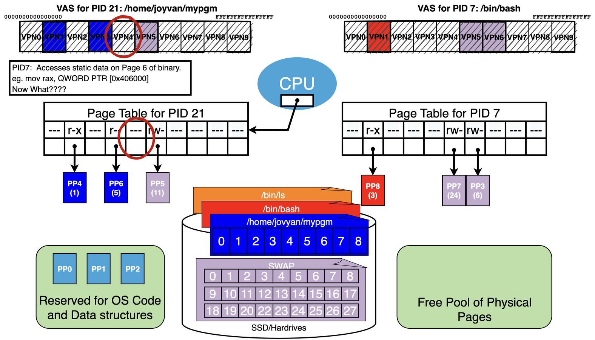
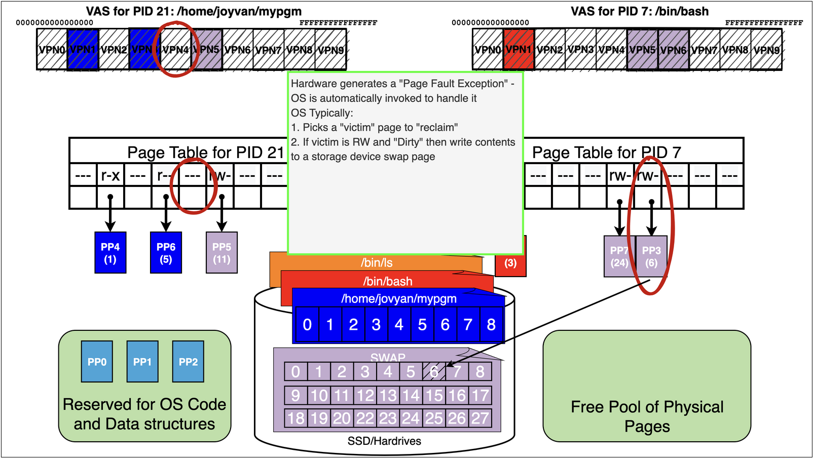
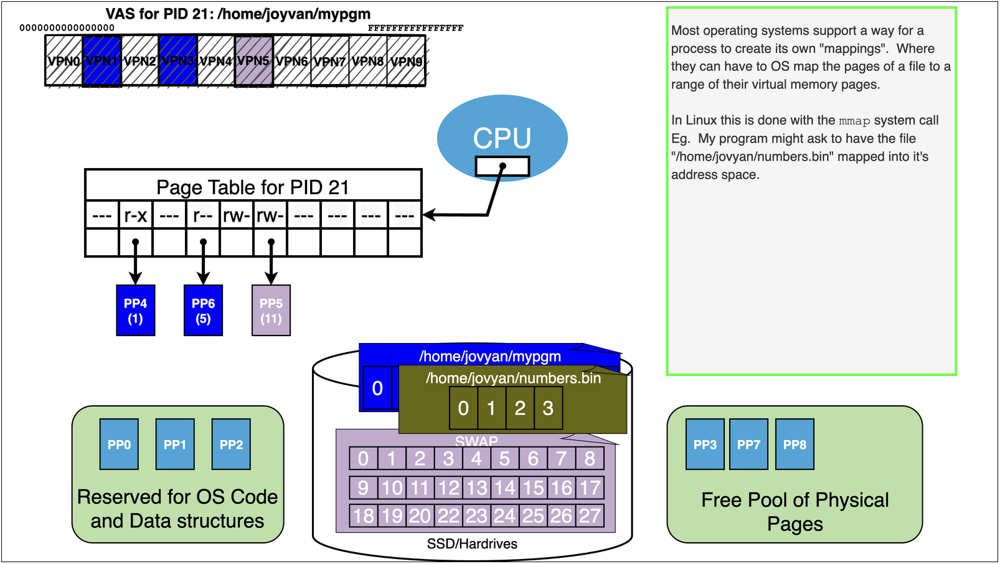
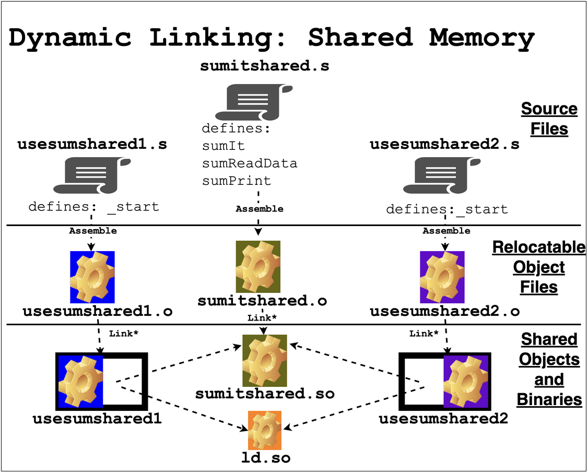

SLS Lecture 15 : Processes and Virtual Memory
Contents
15. SLS Lecture 15 : Processes and Virtual Memory#
create a directory
mkdir vmm; cd vmmcopy examples
add a
Makefileto automate assembling and linkingwe are going run the commands by hand this time to highlight the details
add our
setup.gdbto make working in gdb easiernormally you would want to track everything in git
15.1. Virtual Memory: The Idea#
Enable several instances of programs to be running at the same time
Allow each to have their own view of memory – Virtual Memory
Fool programs into thinking they have the entire memory of a very large “virtual” computer to themselves
Where the virtual computer has the same CPU as the real hardware but whose memory can seem much bigger than the main memory of the real hardware
Eg. Your laptop might have 8 GB (\(1024^3 * 8\) byte) of real main memory but each running program thinks it has 17179869184 GB
Ensure that each running program’s view of memory can be private and independent
Each program has own “Virtual Address Space”
Virtual Address Space is an array of memory \(0\) to \(2^w\)
where \(w\) is size in bits of the Virtual Address Space supported by the CPU: Eg. 64 bits on most modern CPU’s
Each view has its own version of each address
Eg. Each view has its own address 0 that are independent: changing the value at address 0 in one view does not affecting any of the other views.
Allow the views to be independent but also permit controlled sharing if desired
Let two or more views of memory have some addresses that are “shared”.
Eg. Address 42 in one view and address 42 in another view share the same “underlying” memory so that changes made in one view are visible in the other.
15.2. Virtual Memory: HW + SW#
The Hardware provides the mechanism for Virtual Memory and the Software of the OS uses them to implement Processes
The OS then can start Processes from the executables we create

15.3. The Road from Physical to Virtual Memory#


{kind=link}



{kind=link}

{kind=link}

15.4. Closing the loop#
Kernel maintains a page table for each process.
It initializes the page table with mappings to the content from the executable along with any additional needed
Eg. bss and stack
As process runs additional mappings can get created:
Eg. heap, dynamically linked libraries, addition program requested mappings

15.5. Virtual Memory: Party Trick 1: Paging#
|  |
How can we possibly allow one process to run let, alone hundreds of them?
|
15.6. Virtual Memory: Party Trick 1: Paging#

|
To solve this problem we need to introduce our “External” Storage devices
|

Lets add some more details to our process picture form earlier
First lets introduce the idea that all “regular” files are stored on an external storage device
we can think of the files as pages of data that reside on “disk”
thus any byte of a file is on a particular page of the file
We will also reserve a portion of the drive or maybe even another drive to act like a large pool of “swap” pages for data that does not below to a file but is only associated with a running program
Now when a binary is “loaded” by the OS we are really just mapping part of the new processes address space to pages of the binary file on disk
this mean that the OS will allocate free page of memory and load it with the correct data from the corresponding disk page when it is needed
text pages will be loaded with the byte value from the appropriate text data from the binary and marked read and execute
read-only data will be loaded with the byte values from the appropriate ro data from the binary and marked read
data will be loaded from load with bytes from the the appropriate data from the binary and marked read and write
for bss it will allocate free pages and fill them with zeros
for the stack it will allocate free pages as needed
similarly for heap and other dynamic pages
pages of a process that are not associated with a specific file will be associated as needed to a page in the swap storage
As we can see process 21 running the binary /home/jovyan/mypgm has accessed pages
/home/jovyan/mypgm: 1 r-x – probably an text page
/home/jovyan/mypgm: 5 r– – probably ro data
finally it has a swap page mapped r-w – probably its stack
First lets think about what happens if bash while it is running requests a heap page via the
brksystem call.

Now lets assume we are running pid 21 again
it now accesses the static data for a large array at address 0x406000
mov rax, QWORD PTR [0x406000]
0x406000 happens to land on VPN4 that has not been accessed yet
Remember we are out of free pages!

{kind=link}


{kind=link}


15.7. Virtual Memory Trick 2: Memory Mapping Files#
We can use OS memory mapping calls to make files magically appear in our process’s address space

{kind=link}


15.7.1. See example in mmap.s example in the notes to see how this can be done…#
This program maps a “song.txt” file into the process, for both read and write permission.
It then scans the data of the file changing all occurrences of ‘a’ to ‘A’.
It then uses the write system call to write the memory to the standard output
Because the options given to the
mmapsystem call changes are reflected back to the file when the process exits.
Note we have to make several system on Linux. Further more there are a lot of options to the mmap call itself
15.8. The main point is to understand the idea you do not need to know the details of the Linux calls#
Of course we could have imagined doing the same sort of thing with our sumit example. Where we could use mmap to map the data files into our address space.
CODE: asm - mmap.s
.intel_syntax noprefix
.section .rodata
filepath:
.asciz "song.txt"
.section .data
ptr:
.quad 0
fd:
.quad 0
.section .text
.global _start
_start:
# open
mov rax, 2
mov rdi, OFFSET filepath
mov rsi, 0x2 # O_RDWR
xor rdx, rdx # 0 for the mode flags
syscall
cmp rax, -1 # open returns -1 on errors
je error
mov QWORD PTR [fd], rax
# mmap file associated with the fd opened above
mov rax, 9 # mmap system call number
mov rdi, 0 # NULL address let OS pick
mov rsi, 100 # 100 bytes of the file
mov rdx, 0x3 # PROT_READ | PROT_WRITE
mov r10, 0x1 # MAP_SHARED
mov r8, QWORD PTR [fd]
mov r9, 0 # offset in file
syscall
cmp rax, -1 # check if mmap work (returns -1 on failure)
je done
mov QWORD PTR [ptr], rax
# capitalize all lower case 'a' that are in the data
xor rbx,rbx # rbx=0
# rax points to the data, rbx is index
loop:
cmp BYTE PTR [rax + rbx], 'a # check ith byte to see if it is an lower case a
jne next
mov BYTE PTR [rax + rbx], 'A # it is so replace it with upper case A
next:
inc rbx # increment index
cmp rbx, 100 # compare index to 100
jl loop # less than the keep looping
# write data of file to stdout
mov rax, 1 # write system call number
mov rdi, 1 # fd = 1
mov rsi, QWORD PTR [ptr] # address of where data was mapped
mov rdx, 100 # 100 bytes
syscall
mov rdi, 0 # success if we got here
jmp done
error:
mov rdi, -1
done:
mov rax, 60
syscall
15.9. Virtual Memory Trick 3: Sharing#
At first the obvious value of virtual memory is to “isolate” processes from each other
Each processes Virtual Address Space by default is distinct and separate
However, noting stops us from creating mappings via the page tables of different processes that allow “sharing”
Lets us directly share bytes of memory between different running programs!

15.10. Virtual Memory Trick 3: Shared Dynamically Linked Libraries#
One of the most common uses of shared mappings is to facilitate “Shared Objects/Libraries”
This Feature is used on all modern commercial operating systems: Window, MacOS, Linux, …
A specialized use of Virtual Memory Shared mappings
where we map in object files to our process after we start running
Eg. code that is not present in the binary is mapped it after the process is created
Library code and data can then be shared and updated in independently
Many processes that use the same libraries share the same pages of memory
Avoids duplication of memory for common libraries
Reduces size of binaries
But it comes with complication


|
Let’s reviewing how we build “statically” linked binaries
|
|  |
|

15.10.2. build a static binary of version 1#
15.10.3. build a static binary of version 2#
TermShellCmd("make LDFLAGS= ASFLAGS= usesumshared2static", cwd=appdir, prompt='')
15.10.5. build a dynamic binary of version 1#
15.10.6. build a dynamic binary of version 2#
15.10.7. make some data#
15.10.8. Test out the binaries#
of course the output is not ascii so we need to translate it
15.10.9. Things to try#
Try binaries with the larger data files
use
gdband get both static version started and look at the their mappingsnow do the same for the dynamic version and compare to the above
15.11. Summary#
15.11.1. Virtual Memory#
MMU: The CPU has within it a sub-component called the Memory Management Unit (MMU)
Address Space: Is a contiguous range of numbers from 0 to \(m\)
Physical Address Space: is an address space that is defined by the maximum amount physical memory the CPU can be physically connected to
Eg Typically we find that CPU’s support physical address spaces 0 to \(2^{p}\) where the value of \(p\) might be 36,40,46,48,52 depending on the CPU
Virtual Address Space: is a range defined by the MMU
Typically on a 64 bit CPU a virtual address space is defined to be the range 0 to \(2^{64} - 1\)
VAs and PAs’: Any time a value needs to be read or written to a memory location, during fetch, decode, execute loop, the MMU will be asked to translate the address
We call the input to the translation a “Virtual Address” (VA)
The output is a “Physical Address” (PA) that is within the Physical Address Space of the computer and can used to do a physical memory bus transaction
If an error occurs and the MMU cannot translate the VA to a PA then it generates a CPU error and an OS routine is invoked.
We call this kind of error a Page Fault, and the OS routine a Page fault handler
From this perspective we can abstractly think of the MMU as have a “translate” function: $\(\text{MMU.translate}(\text{VA})\rightarrow \text{PA} \ \text{or} \ \text{Error: Page Fault}\)$
Pages: To make page translation easier and more efficient we break memory up into equal sized chucks call pages.
Typically the standard sized used us \(4096\) bytes (4Kb). A 4Kb page of memory has 4096 locations.
The locations on a particular Page can be index by a number that would range from 0 - 4095, in hex notation this would be 0 to 0xFFF (it takes 12 bits to represent 4095)
Both the Virtual Address and Physical addresses are broken down by pages
caveat: Today most modern hardware and OS’s support more than one page size but this is just a wrinkle on top of the basic model
Page Number: If we know the page size, and that is a power of 2, then it is very easy to break and address down into a page number and an offset on the particular page
Eg. assuming a 4Kb page size then simply dropping the last 12 bits (or 3 hex digits) will give you the page number that this address falls. Similarly if we remove all but the lower 12 bits then we have the offset of the location on the page that the address refers to.
VA to VPN and OFFSET: For example again assuming 64bit VA’s and 4Kb page size we can break apart the VA as into its VPN and OFFSET as follows
\(\text{VPN} = (\text{VA} \ \text{bitwise AND} \ \text{0xFFFFFFFFFFFFF000})\ \text{right shift by 12 bits}\)
\(\text{OFFSET} = \text{VA}\ \text{bitwise AND} \ \text{0x0000000000000FFF}\)
PA to PPN and OFFSET: For example assuming a 36 bit Physical Address Space and a 4Kb page size we can break apart the PA into its PPN and OFFSET as follows
\(\text{PPN} = (\text{PA} \ \text{bitwise AND} \ \text{0xFFFFFFFFF000})\ \text{right shift by 12 bits}\)
\(\text{OFFSET} = \text{PA}\ \text{bitwise AND} \ \text{0x000000000FFF}\)
Page Table: The MMU uses a data structure, that must be located in physical memory, to do the translation. This data structure is called a Page Table
we can think if of it link an array whose entries are call Page Table Entries … in reality, in order to safe space, Page Table are usually a more complex layout like a tree or nested hashtables.
The OS must create the Page Tables and updated them when needed.
The MMU provides a function for the OS to set the Active or Current Page Table that the MMU should use to do its translations - Eg. $\( \text{MMU.setPageTable}(\text{Physical Address of a Page Table}) \)$
Translation as Page Table Lookup: To translate an address the page table takes the input VA and “looks it up” in the current Page Table
The lookup can be though of as a very simple array index operation.
\(\text{MMU.translate}(\text{VA})\):
break VA into VPN and OFFSET (see above)
locate the Page Table Entry – eg \(\text{PageTable}[\text{VPN}]\)
check to see if the entry is “Valid” and the access is permitted
Marked Valid: has a PPN for a physical page that this VPN should be translated to stored in it
the type of access being requested to this VPN is “allowed” - Each memory access from the fetch, decode, execute loop may be one of
Execute Access : a read to get an instruction from the address (happens during fetch)
Read Access : a read of an address for data (happens during execute if the instruction source operand is a memory location eg.
mov al, BYTE PTR [0x406000]Write Access: a write of data to an address (happens during execute if the instruction destination operand is a memory location eg.
add BYTE PTR [0x408000], al
Page Table Entries: The entries of a page table are defined in the CPU documentation and typically include space to store several pieces of information to control how the MMU will translate an address
While the MMU knows how to use a page table to translate address it is the OS that creates, updates and maintains them
Each entry has a bit that marks it as valid or invalid - if invalid then the MMU on lookup will automatically generate a page fault.
Each entry has space to store a PPN – this is the physical page that VPN, that this entry is index by, should be translated to
Each entry has permission information that indicate if a particular type of access is allowed to the VPN. This allows the OS to enforce restrictions on how the bytes on a particular VPN can get used.
If the a page is marked invalid then the OS can use the space in the PTE to store any information it likes: Eg. a Disk Block number that stores the data of the VPN
15.11.2. Processes and Virtual Memory#
The OS is the only software that has the ability to access physical memory directly and to managed the MMU of the CPU
The OS uses the virtual memory features of the MMU to implement Processes. It creates a Page Table for each process to managed that processes Virtual Memory.
The OS uses storage devices like Hard Disk Drives (HDD’s) or Solid State Drives (SSD’s) as a place to
store more data than can fit in main memory
store long term data like the content of regular files: binaries, documents, etc
Isolation: By carefully construction the Page tables that OS can by default ensure that no process can only access memory it is allowed to and cannot access the memory of other process or the kernel
Paging: The OS moves physical pages of memory between the processes and the storage devices to give the illusion that each process has a very large memory.
Mappings: The OS provides system calls that allow a process to add or remove mappings of files to or from its virtual address space
Sharing: The OS provides system calls that allow sharing memory between process if they are allowed
Two processes simply open a file that they both have permission to and then they both map it
Shared Objects and Libraries: A special use of sharing memory between processes is to implement the sharing of library code